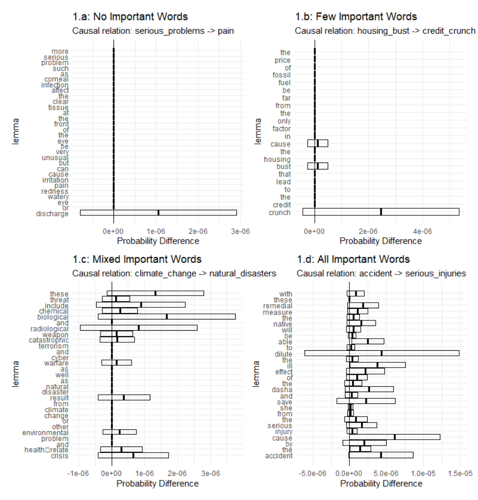

IUPUI- Causality ProjectNSF Granted : Award number 1948322
Resources
Semi-Supervised Causal Relation Extraction
Causal knowledge is an important target of information retrieval. However, most causal knowledge is locked away in unstructured text data like articles on the web. Deep learning models are getting better at extracting relationships from text, but typically don’t account for the uncertainty in the relations.
Our team is developing a semi-supervised method for creating large scale causal knowledge graphs that account for relation uncertainty.
What Causes Causality?
Deep learning models can perform well on complex tasks, but are often black boxes. In our recently submitted paper, “What Causes Causality? Explaining a Deep Causal Text Detection Model”, we investigate which words are most important to such a model in order to better understand its decision.
We produced saliency maps of word importance in causal sentences from CauseNet. A few examples are shown below. By investigating these plots, we found that the causal detection model broadly consider causal phrases, effect phrases and connective as important. In addition, the causal detection model exhibited a greedy property where multiple causal phrases in a single sentence were considered important, when only one would have been needed. We hope our results will inform the development of future causal extraction model.
Our team is developing a semi-supervised method for creating large scale causal knowledge graphs that account for relation uncertainty.
